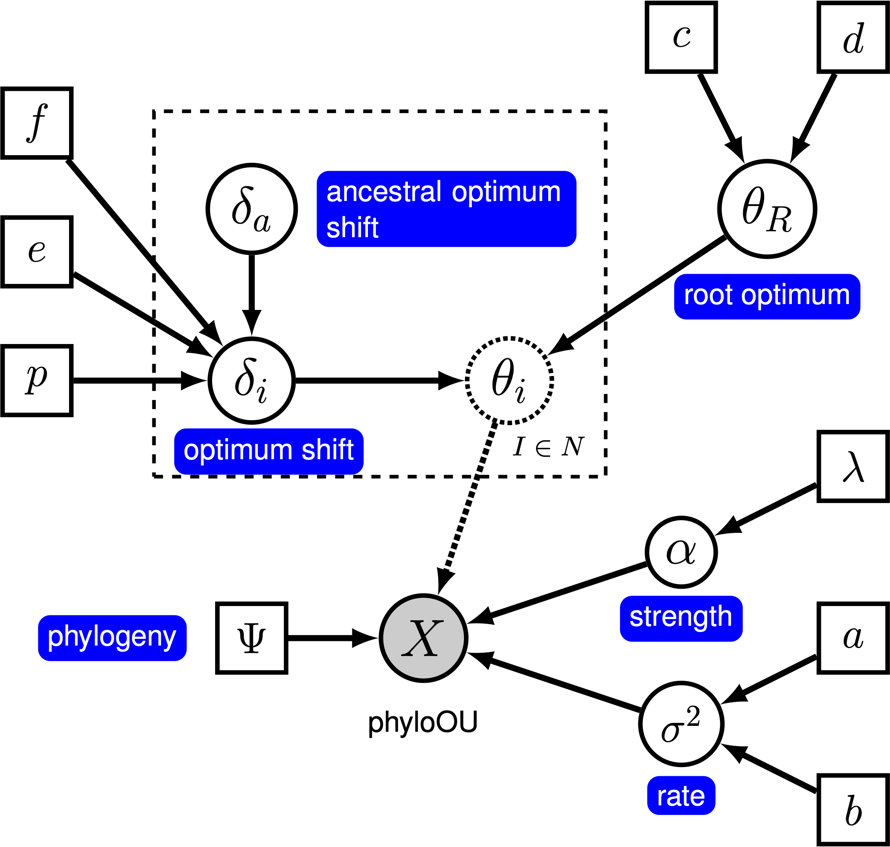
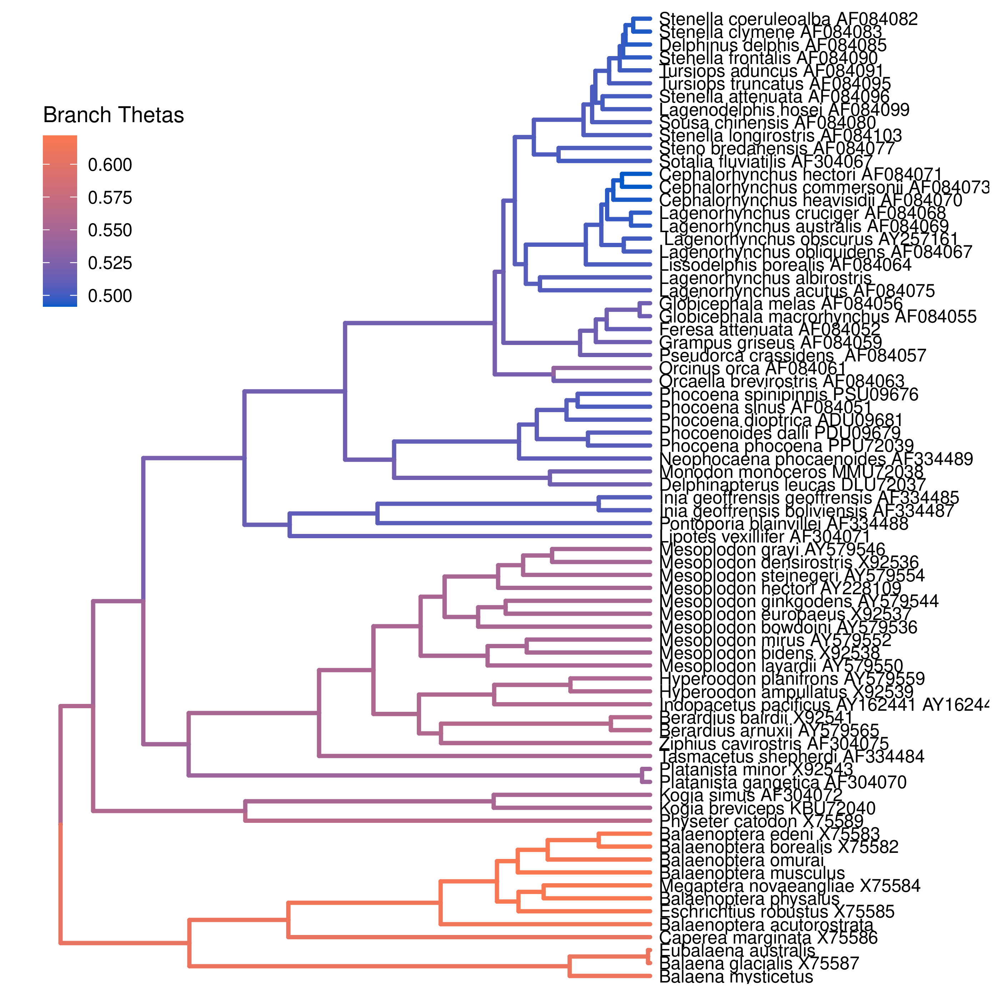

This tutorial demonstrates how to specify an Ornstein-Uhlenbeck model where the optimal phenotype is allowed to vary over branches of a time-calibrated phylogeny (Uyeda and Harmon 2014) using the datasets of (log) body-size across vertebrate clades from (missing reference). We provide the probabilistic graphical model representation of each component for this tutorial. After specifying the model, you will estimate the parameters of branch-specific Ornstein-Uhlenbeck evolution using reversible-jump Markov chain Monte Carlo (rjMCMC).
Under a simple Ornstein-Uhlenbeck (OU) model, the optimal of a continuous character is determined by a single rate parameter, $\theta$. Many evolutionary questions are related to how the optimal phenotype changes among lineages. In a Bayesian setting, we can specify a ‘‘relaxed’’ OU prior model that allows the optimal phenotype to vary over the phylogeny.
Here, we will use the ‘‘random local clock’’ model, similar to the one described by Uyeda and Harmon (2014) in the software bayOU. In this model, we assume that each branch in the phylogeny either does or does not have a optimum shift. When there is no shift on a branch, the optimum on the branch is inherited directly from its ancestral branch; when there is a shift, the ancestral optimum is shifted by an amount that is drawn from a specified prior distribution. We specify a prior probability, $p$, that a given branch experiences a shift. For a tree with $n$ branches, the expected number of shifts is $E(k) = n \times p$. To control the number of shifts, we specify a prior on the expected number of shifts, $E(k)$, and then calculate the prior probability for a shift on a particular branch, $p = E(k) / n$. The graphical model shows the relationship between the branch-specific optima and priors (fig_ou_relaxed_gm).

In this tutorial, we use the 66 vertebrate phylogenies and (log) body-size datasets from (Landis and Schraiber 2017) to estimate branch-specific optima of body-size evolution.
⇨ The full relaxed BM-model specification is in the file called mcmc_relaxed_OU.Rev.
We begin by deciding which of the 66 vertebrate datasets to use. Here, we assume we are analyzing the 5th dataset (Acanthuridae), but you should feel free to choose any of the datasets.
dataset <- 1
Now, we read in the (time-calibrated) tree corresponding to our chosen dataset.
T <- readTrees("data/trees.nex")[dataset]
We also want to keep track of the number of branches for our relaxed clock model.
ntips <- T.ntips()
nbranches <- 2 * ntips - 2
Next, we read in the character data for the same dataset.
data <- readContinuousCharacterData("data/traits.nex")[dataset]
Additionally, we initialize a variable for our vector of moves and monitors:
moves = VectorMoves()
monitors = VectorMonitors()
In this tutorial, we assume the tree is known without area. We create a constant node for the tree that corresponds to the observed phylogeny.
tree <- T
The stochastic rate of evolution is controlled by the rate parameter, $\sigma^2$. We draw the rate parameter from a loguniform prior. This prior is uniform on the log scale, which means that it is represents ignorance about the order of magnitude of the rate. As before, we provide a scale move that proposes changes to the parameter during MCMC.
sigma2 ~ dnLoguniform(1e-3, 1)
moves.append( mvScale(sigma2, weight=1.0) )
The rate of adaptation toward the optimum is determined by the parameter $\alpha$. We draw $\alpha$ from an exponential prior distribution, and place a scale proposal on it. This parameter is assumed to be constant across the tree (even though the optimum will vary).
alpha ~ dnExponential(10)
moves.append( mvScale(alpha, weight=1.0) )
We begin by drawing the optimum value at the root of the tree, and including a slide move.
theta_root ~ dnUniform(-10, 10)
moves.append( mvSlide(theta_root, weight=1.0) )
We specify the relaxed-optimum model by specifying a prior on the probability of shifts for each branch. We parameterize our prior expected number of shifts, and then compute the probability of a shift on a given branch.
expected_number_of_shifts <- 5
shift_probability <- expected_number_of_shifts / nbranches
Next, we specify the prior distribution on the size of shifts (when they occur). We draw each rate shift from a uniform distribution.
shift_distribution = dnNormal(0, 0.587)
Now, we loop over each branch, drawing a the change in the optima value from a mixture distribution. This mixture distribution places prior probability $p$ on the rate shift being drawn from the uniform distribution we just specified, and prior probability $1 - p$ on the shift being exactly equal to 0 (i.e., no shift). We then compute the optimum on the branch by adding the change in the optimum to the ancestral optimum. Note that we loop over the branches in reverse order; this ensures that the ancestral optimum exists when we specify the optimum for a given branch.
for(i in nbranches:1) {
# draw the theta shift from a mixture distribution
branch_deltas[i] ~ dnReversibleJumpMixture(0, shift_distribution, Probability(1 - shift_probability) )
# compute the theta for the branch
if ( tree.isRoot( tree.parent(i) ) ) {
branch_thetas[i] := theta_root + branch_deltas[i]
} else {
branch_thetas[i] := branch_thetas[tree.parent(i)] + branch_deltas[i]
}
# keep track of whether the branch has a shift
branch_theta_shift[i] := ifelse( branch_deltas[i] == 0, 0, 1 )
# use reversible-jump to move between models with and without
# shifts on the branch
moves.append( mvRJSwitch(branch_deltas[i], weight=1) )
# include proposals on the shift (when it is not 1)
moves.append( mvScale(branch_deltas[i], weight=1) )
}
We also keep track of the total number of rate shifts.
num_theta_changes := sum( branch_theta_shift )
Now that we have specified the branch-specific theta parameters, we can draw the character data from the corresponding phylogenetic OU model, just as we did for the simple OU models. In this case, we provide the vector of branch_thetas to the theta argument.
X ~ dnPhyloOrnsteinUhlenbeckREML(tree, alpha, branch_thetas, sigma2^0.5, rootStates=theta_root)
Noting that $X$ is the observed data (), we clamp the data to this stochastic node.
X.clamp(data)
Finally, we create a workspace object for the entire model with model(). Remember that workspace objects are initialized with the = operator, and are not themselves part of the Bayesian graphical model. The model() function traverses the entire model graph and finds all the nodes in the model that we specified. This object provides a convenient way to refer to the whole model object, rather than just a single DAG node.
mymodel = model(X)
For our MCMC analysis, we need to set up a vector of monitors to record the states of our Markov chain. The monitor functions are all called mn*, where * is the wildcard representing the monitor type. First, we will initialize the model monitor using the mnModel function. This creates a new monitor variable that will output the states for all model parameters when passed into a MCMC function.
monitors.append( mnModel(filename="output/relaxed_OU.log", printgen=10) )
Additionally, create a screen monitor that will report the states of
specified variables to the screen with mnScreen:
monitors.append( mnScreen(printgen=1000, sigma2, num_theta_changes) )
Finally, we include an extended Newick monitor to keep track of the branch-specific theta values on each branch of the tree.
monitors.append( mnExtNewick(filename="output/relaxed_OU.trees", isNodeParameter=TRUE, printgen=10, separator=TAB, tree=tree, branch_thetas) )
With a fully specified model, a set of monitors, and a set of moves, we
can now set up the MCMC algorithm that will sample parameter values in
proportion to their posterior probability. The mcmc() function will
create our MCMC object:
mymcmc = mcmc(mymodel, monitors, moves, nruns=2, combine="mixed")
Now, run the MCMC:
mymcmc.run(generations=50000)
Finally, we summarize the branch-specific rate after we run the MCMC analysis.
treetrace = readTreeTrace("output/relaxed_OU.trees")
map_tree = mapTree(treetrace,"output/relaxed_OU_MAP.tre")
When the analysis is complete, you will have the monitored files in your output directory.
⇨ The Rev file for performing this analysis: mcmc_relaxed_OU.Rev
You can then visualize the branch-specific rates by plotting them using our R package RevGadgets. Importantly, these plots allow you to tease apart the relative contributions of background- and state-dependent-rate variation to overall patterns of rate variation across the tree. Just start R in the main directory for this analysis and then type the following commands:
library(RevGadgets)
# read the annotated tree
tree <- readTrees("output/relaxed_OU_MAP.tre")
# plot the objects
plotTree(tree, color_branch_by="branch_thetas")

branch_thetas) assuming a prior expected number of shifts of 5.